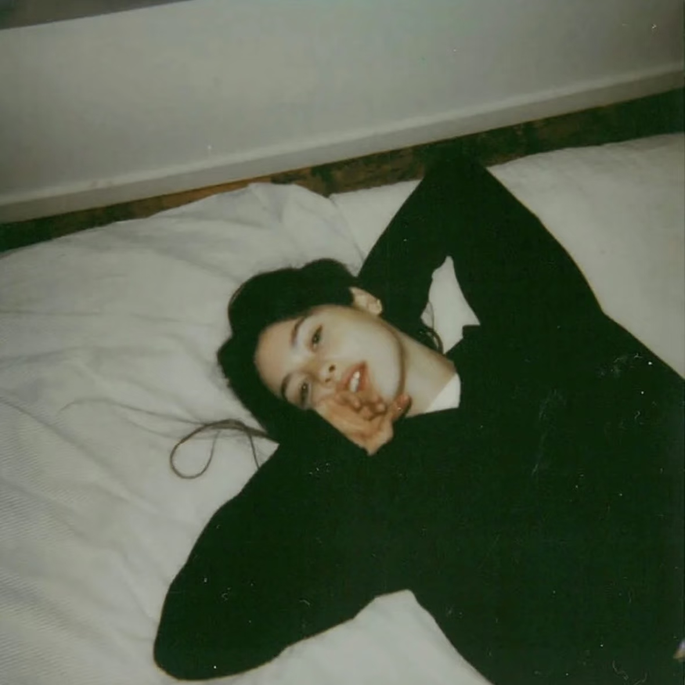

A Psychometric Archive
"Every song you loved was a blueprint
of the heart you once broke.
Step into the silence, and listen to the ghosts."
Chapter 01
Resonance Manifestation
Section I: Gracie Core Correlation
Section II: Extended Indie Resonance
A curation from a library of 500 folk & indie tracks.